**Dartmouth 2024 Rendering Competition "Reflections on Time"**
(#) Michael Riad Zaky (2nd Place))
(##) Motivational images
The broad idea with the motivation images is that we want a render that shows a progression of progress in
computer graphics in various ways. Here's three images:

We're going to have an inverse rendering component, since graphics is now good enough to start doing the
rendering process backwards, so this cup is going to be used to show that, since the cup has roughly two simple
materials.

On the opposite end of the spectrum, the further back in time you go, the less polygons were present in renders.
This picture shows the original "Silent Hill" game, where on top of the low polygon count, they needed to add fog
since the draw distance couldn't go that far (it would go over the memory limit).

To show off reflections, I'm going to create an infinity mirror effect, where two mirrors face eachother and the reflections
repeat. The further the reflection, the more dumbed down the graphics should be, which we can show with scene masking.
(##) Proposed features and points
2 Points - Parallelization with Nanothread
3 points - Intel Open Image Denoise Integration (or other similar denoise method)
3 points - Scene masking (render different scenes per pixel in final image according to an input image mask)
8 points - Inverse material rendering (iteratively change given material values until rendered image section matches some similar section of a target image).
(##) Nanothread Parallelization (2 pts))
Parallelization was added with the [nanothread](https://github.com/mitsuba-renderer/nanothread) library.
This was added both to the render itself (parallel rendering across each column of pixels), as well as to
the Bounding Volume Heirarchy constructor. Notably, creating threads when constructing each child in the
heirarchy leads to crashing if there's too many children; limiting thread creation by depth fixes this.
Anecdotally, render time went down on a scene from around 50 seconds on a slower laptop single-threaded to
around four seconds on a faster laptop multi-threaded (2018 intel macbook vs 2024 8-core m3 macbook).
The addition of this is relatively simple in both cases:


(##) Intel Open Image Denoise Integration (3 pts))
The difficult part about using [Intel's denoising library (OIDN)](https://github.com/RenderKit/oidn)
isn't the code itself, but the dependencies, such as needing git's large file extension to move the model weights
and needing an installation of Intel's ISPC compiler to build the library. Apart from this, usage is relatively simple.
Building is easy enough with CPM after the dependencies are found:

Using their default ray-tracing denoiser yields an ok result:
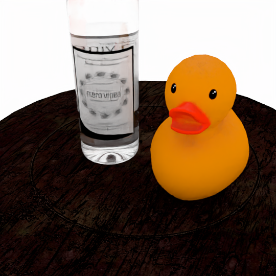
However, some parts appear blurred, such as the text on the bottle in this scene. To fix this,
we give both tangent-space normals and albedo-only values of the scene as auxillary inputs to the denoiser.
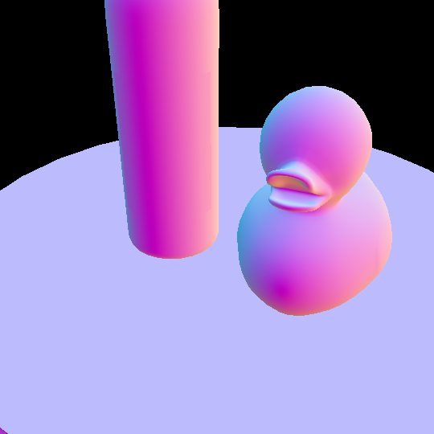
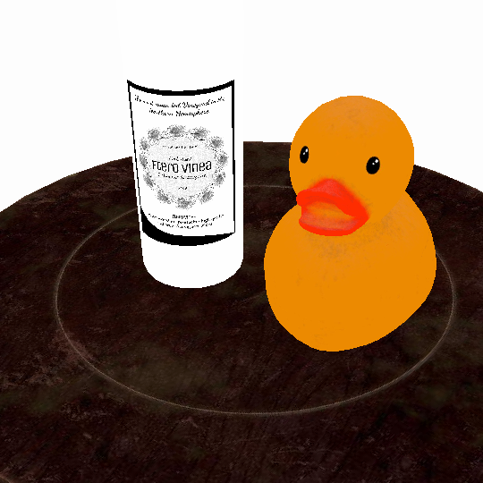
I tested different combinations of these auxillary images; notably, the normal-only image cannot
be added by itself due to an OIDN design decision to avoid adding another training model for that
and bloating the weights' file size further. Using the albedo image by itself still causes blurry
text, while using the albedo and normal images seems to cause some color artifacting near the text.
Also notable, these renders were made with 12 samples per pixel (spp); reducing down to 2 spp still
results in a relatively good render much faster with the auxillary-aided denoising.
This will do for now; there's several things that can be fine-tuned on a case-by-case basis according
to the [documentation](https://www.openimagedenoise.org/documentation.html).
(##) Scene Masking (3 pts))
There's probably a better term for this, but the fact pixels are computed in parallel means that not only do they
not have to be computed at the same time, they don't even have to be in the same scene, similar to a split-screen
mechanic in a video game. We'd like a mechanic where we can mix an arbitrary number of scenes in a render. Another
interpretation is we'd like to represent a different time at each screen pixel, which is a physically plausible mechanic of a
camera. So, the first step is to make a "mask" the size of the target render. Then, we need a way of organizing which
scenes we want.


We then split the color space on the mask evenly across the number of scenes in our render. So one image gets the interval
[0,1], two images get the intervals [0,.5) and [.5,1], and so on for however many scenes there are. Each scene gets
written to the pixel only if the mask is within the scene's interval. We then load and write the respective pixels of the
scenes in sequence so that only one scene needs to be loaded at any given time. The render time is reduced if the computation
for non-written pixels gets skipped, in this example with two scenes from 467 seconds down to 220 seconds, however this can
lead to some artifacting due to the previously implemented denoiser:
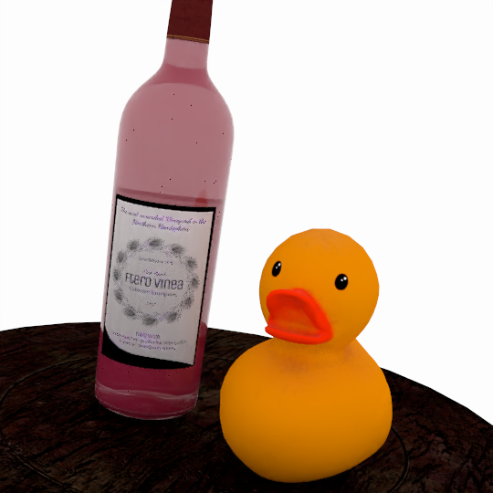
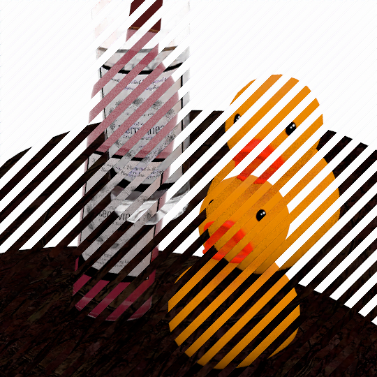
The denoising artifacts are understandeable; the denoiser is getting a version of the input images with large portions
of information missing (black values), and so that's being mixed in to the actual render (this is visible in the edges of
the mask as well as the new noise across the surfaces). The time savings are worth it, however; a 2x speedup
isn't huge in this case, but in a case where there's 100 scenes mixed in, the speedup should be roughly 100x (we'll attempt
this later in the report). Mixing the renders, albedo, and normal auxillary images, then denoising the final image
removes these artifacts. Here's a side-by-side in case the artifacts weren't clear (they're relatively small):
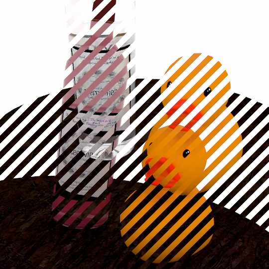
Finally, we make the mask loadable from an image for later use and manual editing, instead of generating the mask each time:

(##) Inverse Rendering (8 pts))
Inverse rendering is a very general term that can mean a lot of things. Forward rendering is having input rendering parameters,
such as models, textures, and lighting information, and outputting some rendered image. Inverse rendering is the reverse,
having some target image with unknown scene information that our renderer should be able to reproduce if we find the right
parameters. This is opposed to what usually happens, which is an artist looking at a target image they want represented and
eyeballing values that look correct to them.
My master's thesis is probably going to be related to inverse rendering for materials on a texel-by-texel basis
against images of real objects using the real-time variation of the Physically Based Rendering equation and/or the Disney BSDF.
We aren't doing that here, partially because we're focusing on ray-tracing with indirect lighting, but also because I'm turning
that in for the other graphics class here.
Instead, we'll be doing a variation on uniform materials across sections of an image, specifically this mug the department gave
us at orientation:

We do this for a few reasons; in realtime rendering, calculating the reflection on a surface yields the same value every time
since the integral of the reflectance hemisphere is estimated; in a ray-tracer, this is instead sampled. This is fine, however it yields
a noisy image, and we'd like to guess material values with the understanding that the error we recieve will be consistent between
renders. So, to mitigate this, only two materials will be solved for; the green ceramic coat, and the white printed part of the mug.
This allows us to check pixels across areas of the render where that material is, instead of only where a specific texel is;
errors can then be summed across this section compared with a similar photograph's section. This should mitigate the effect of rendering
noise as well, as the noise should average closer to zero across the rendered portion compared to a reference render (since
there will be under-estimates and over-estimates).
To start this process, we need the other information about the mug; I'm using an EinScan SE and its associated software, however you can
achieve similarly good results by taking several photos with a phone camera and using other desktop software (such as Reality Scan; See
[here](https://peterfalkingham.com/2020/07/10/free-and-commercial-photogrammetry-software-review-2020/) for a slightly dated
informal comparison).


The shape is pretty accurate, but the texture will need some work; it will be useful mainly for differentiating between
the green paint material, white paint, and everything else (there's a little made-in-china sticker and an un-glazed section
of the mug on the bottom, which we will leave in as diffuse materials for realism).
We can take advantage of the "mix" material we have in the Darts renderer to mask out these non-green/white materials,
then similarly have a mask between the white material ("dartmouth computer science" wording and computer graphic) and
the rest of the image, which corresponds to the green material.
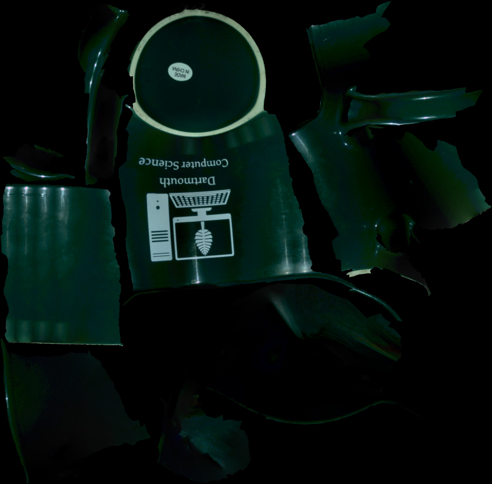
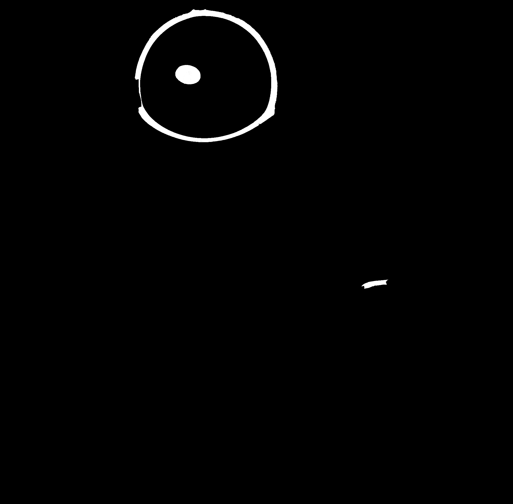
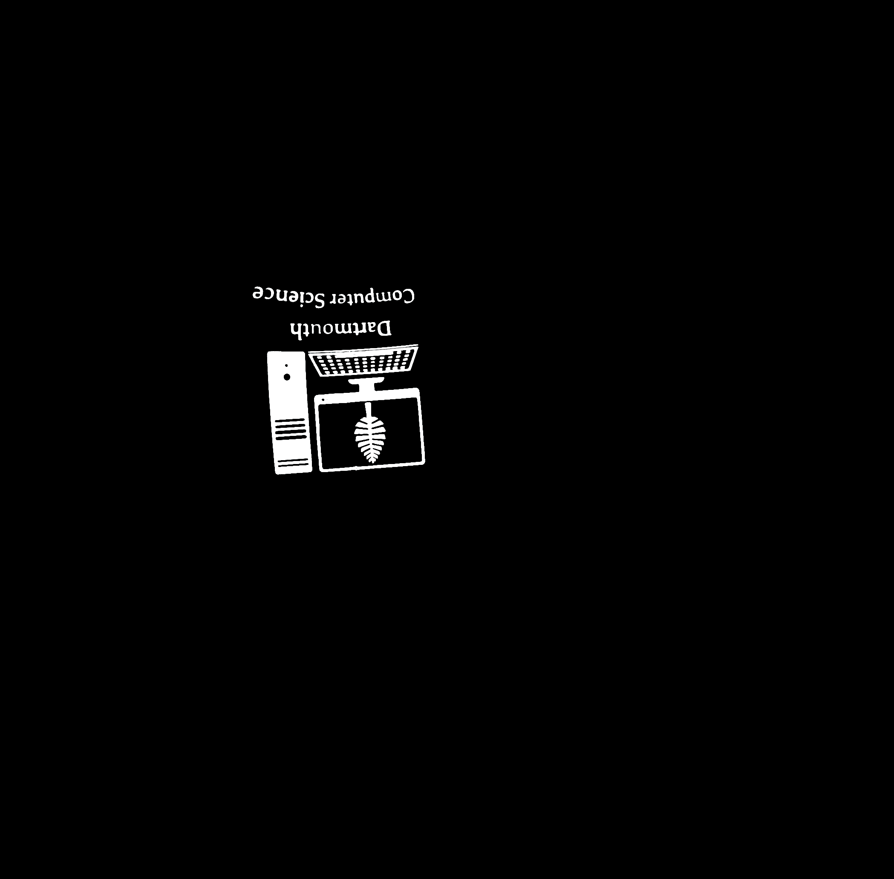
Then, in blender, the white and green materials are defined by their own constants: a mixing factor between diffuse and
glossy BSDFs, and the constants for those BSDFs (albedo color for both, then roughness for the glossy BSDF). This is just
an ad-hoc form of a more general PBR model.

We then make sure the cup is properly varying with regard to these material parameter constants, since we're going to be
comparing to a reference image repeatedly for the inverse solve. For this project, I'm not going to be pedantic about the
exactness of the similarity between the reference and rendered images, but I will make sure they're roughly similar;
the reference image is taken from about the same distance as the digital camera is away from the cup, and I've placed an
emissive sphere that's supposed to be analogous to the IPhone flashlight, but of course these aren't exactly analogous
scenes (the zoom is different, the light is different), we just need sections of the images to roughly correspond to eachother,
as we're going to compare masked sections between them.
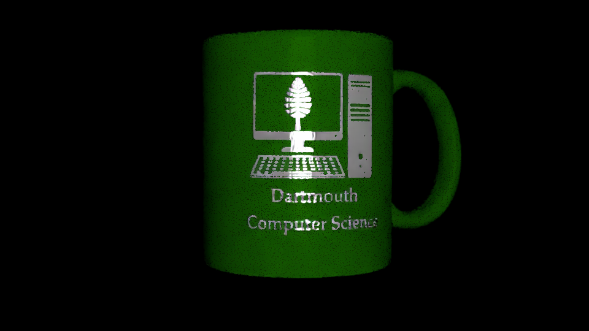
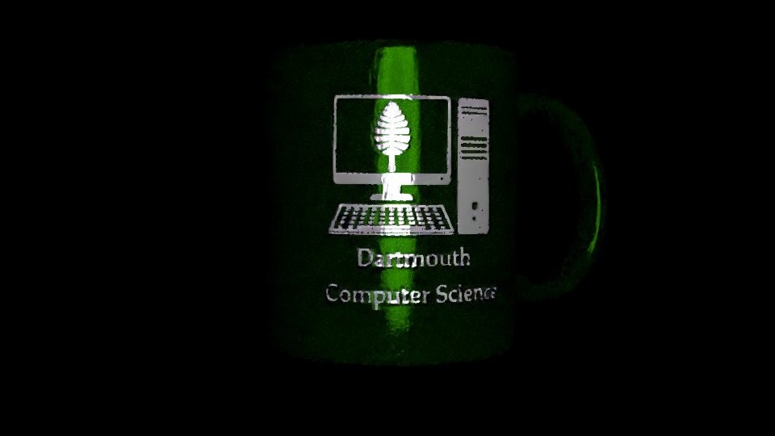
For inverse rendering, the logic is roughly:
- Make some guess about the correct rendering parameters
- Render using that guess
- Calculate an error term between the render and reference image sections
- Create a new guess aimed at reducing this error term
- Repeat for some number of iterations
For optimization, I used the [dlib library](https://github.com/davisking/dlib), and the math behind its global optimization
algorithm is described [here](https://blog.dlib.net/2017/12/a-global-optimization-algorithm-worth.html). However, generally,
the idea behind derivativeless global optimization is consistent between libraries, that a guess is made, and each consecutive
guess is based on the error terms of previous guesses, with the goal of minimizing the function.
The error term is just the mean squared error between each color value in the selected masked sections of the images; again,
for correctness, you'd want to instead use a difference function adjusted for human-percieved variation such as
[this one](https://www.compuphase.com/cmetric.htm), but it shouldn't make too much of a difference.
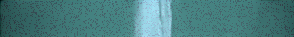
I solved in mainly two configurations; one where all eight parameters were solveable, and one where the diffuse and metal
RGB values were shared, making 5 input parameters instead of 8. In any configuration, there were diminishing returns after
an hour or so (each render took a few seconds); the values from the 8 parameter, 10 hour running time were used since the
error was the lowest.
| Parameters | Iterations | Error | Time |
| ---------- | ---------- | ------ | ---------- |
| 5 | 100 | 2,315 | 11 minutes |
| 5 | 1,000 | 1,332 | 2 hours |
| 8 | 5,000 | 1,171 | 10 hours |
| Parameter Name | Solved Value (5,000 iterations) |
| ---------- | ---------- |
| Mix Factor (0:Diffuse, 1:Metal) | 0.17435021725022354 |
| Diffuse Red | 0.27106505580412393 |
| Diffuse Green | 0.8818665370732239 |
| Diffuse Blue | 0.8800716590188062 |
| Metal Red | 0.2563068583676611 |
| Metal Green | 0.39369336772809604 |
| Metal Blue | 0.5189932605894982 |
| Metal Roughness | 0.2042720614420693 |
There's a caveat in that the reference section isn't entirely representative of the cup. The reference section was
somewhat over-exposed, even though the lowest setting on the IPhone was used for exposure time. The specular area in the section
also won't match the render, since the emissive sphere was larger than the size of the iphone flashlight.
These result in a cup with a brighter hue than the actual cup, even if it matches the over-exposed reference section.
To correct for this, I changed the diffuse RGB values to Dartmouth's
["rich forest green"](https://communications.dartmouth.edu/guides-and-tools/design-guidelines/dartmouth-colors)
that the cup was likely using. Those color values are also roughly proportional to the solved values.
This makes the render further from the reference image, but closer to how you'd typically observe the cup.
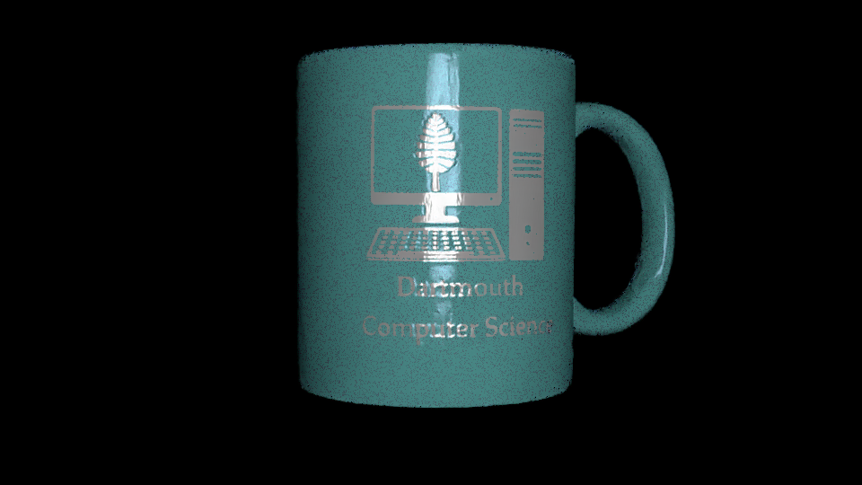
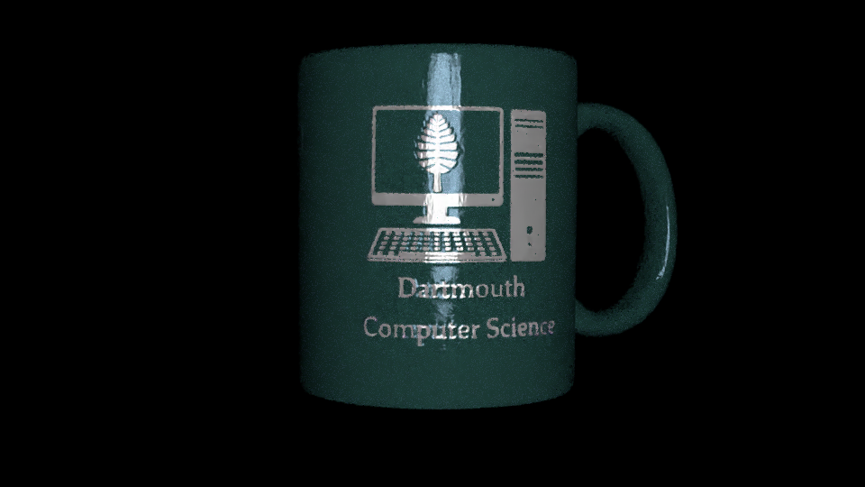
I was also going to solve for the white material values, but the solver tended towards 1 values for the diffuse/metal RGB
values anyways, and you can observe about the same reflectivity on both the green and white materials, so the mix factor and
metal roughness values were copied over from the solved values for the white material, with all color values set to 1.
(##) Scene Setup
For the repeating mirror effect, we can just have two glossy surfaces facing each other. Here's a test scene with salmon colored
surfaces reflecting a blue diffuse cube. The reflections can curve in any direction by rotating the glossy surfaces slightly.

The original cube isn't even visible in this render, these are all reflections. Raising the roughness of the reflective surfaces
to just 0.01 makes each successive reflection blurrier.
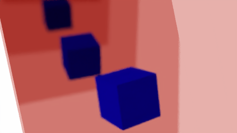
The PBRT 4th Edition github contains a [scene of the 2nd edition book](https://github.com/mmp/pbrt-v4-scenes/tree/master/pbrt-book),
by [Karl Li](https://blog.yiningkarlli.com/2016/09/pbrtv3.html), which I then updated the UV's for and switched out the
cover image for the other PBRT editions.

I mentioned there will be 100 scenes previously; to that end, I've scripted blender to reduce the number of polygons in the cup
model 100 times. Specifically, each iteration has 90% of the triangles of the last iteration. The original model has ~830,000
triangles, while the last model has 352 triangles, which is more on the scale of polygons that was feasible on the PS1. Here are
ten of the models to illustrate, evenly spaced out (1st model, 10th, 20th ... 100th):
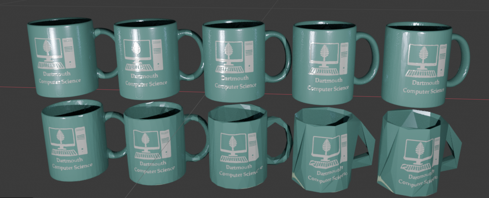
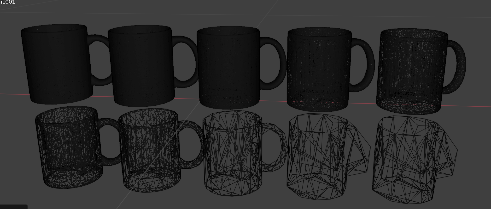
We now have a scene in which we can change the cup, book texture, as well as anything else by just changing the corresponding
value in the json. For example, here's two scenes that vary by cup, book edition, mirror diffuse value, and mirror roughness:
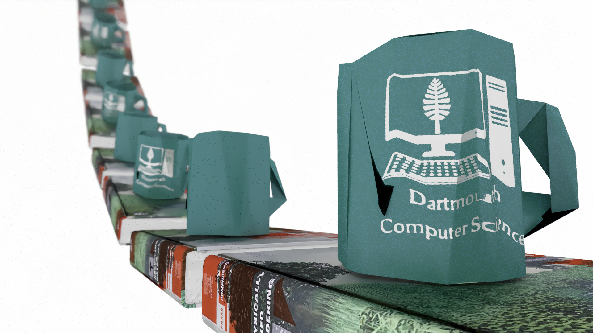
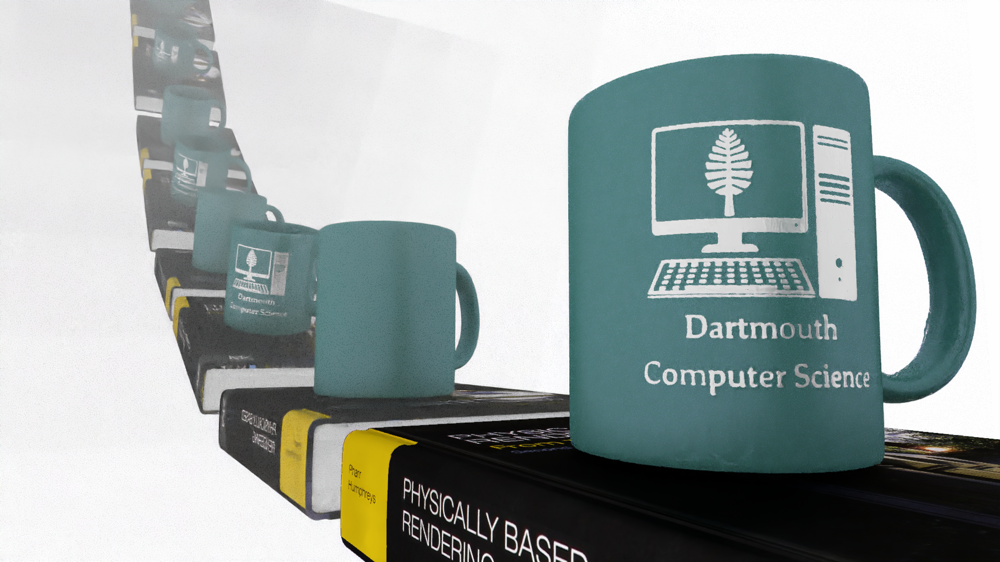
We can confirm masking between 100 scenes works by just making a gradient mask and changing, for example, the background color
between white and red, along with which cup model is loaded:
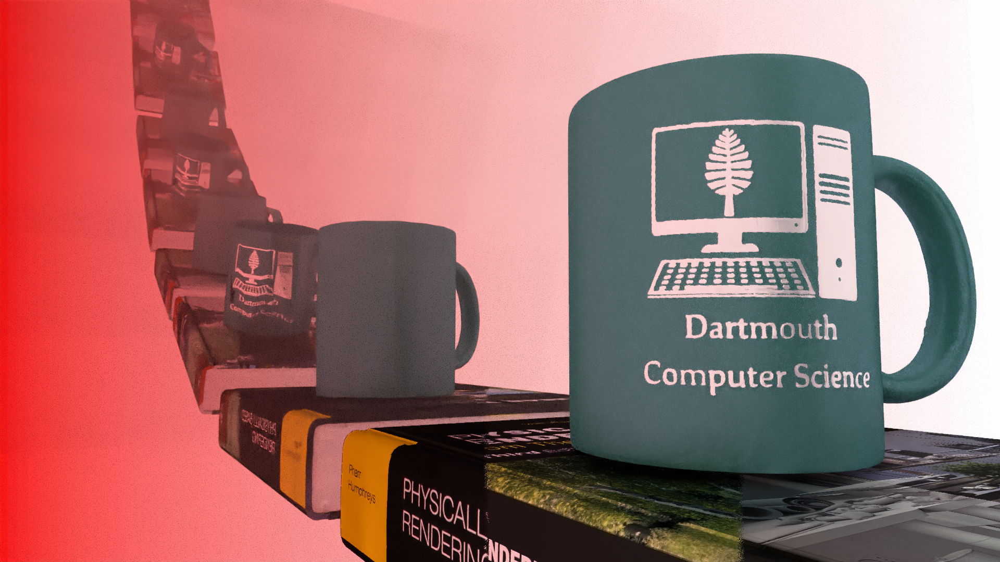
We can add in a floor and a clock for some added realism (we will be doing more with the clock in a bit):

The floor here was made by making the darker squares of the checkerboard pattern reflective through a mix shader.
There are now three reflective surfaces all facing eachother, making this neat pattern. One issue is that you can't really
tell there's a mirror in the scene; I could have just copy and pasted the objects in a pattern. I tried several different
textures to make the mirror plane more obvious without obstructing the view of the reflections, I settled on this
tiled pattern since it's relatively non-obtrusive. Here's some variations of that:
We're going to vary the clock hand positions as well, between reflections, using the scene masking. For that, I've made
different model files for each hand position, that can be swapped out:
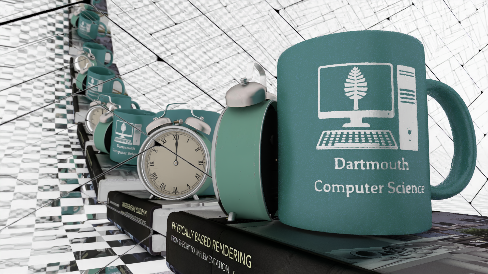
With that, there's four main groups of interpolated scenes (book editions and clock hand positions),
and I do the same 100 decimations on the clock model just because, so they'll look something like this:
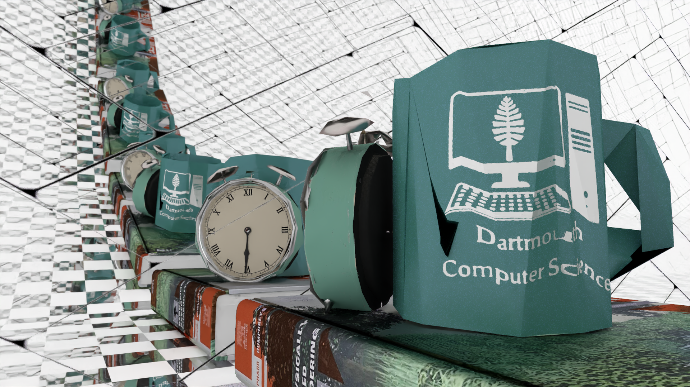
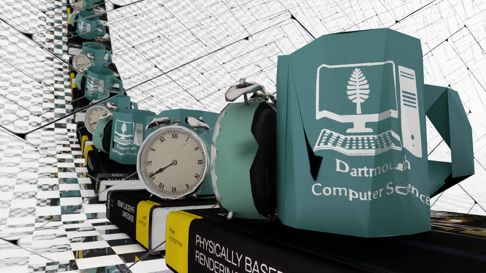
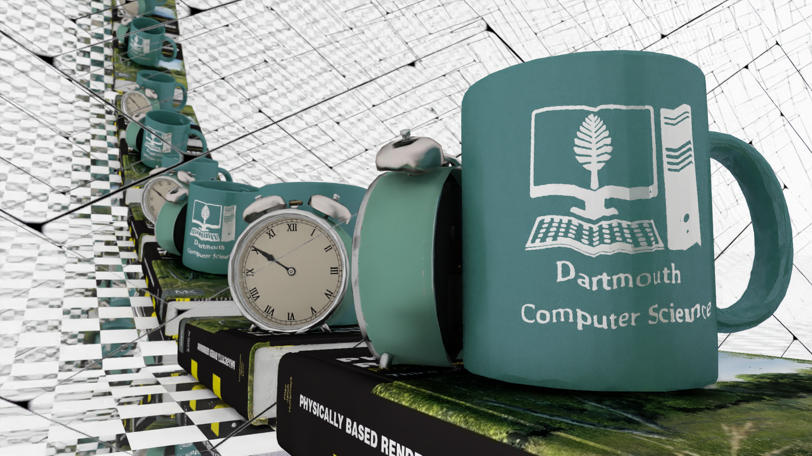
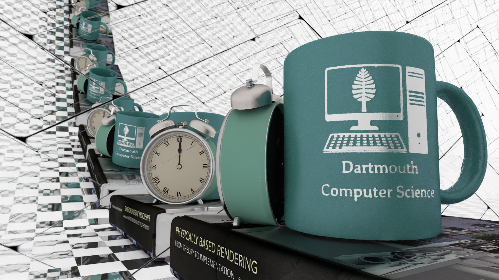
These are varied in the final scene from front to back, but anything could have been made a function of screen-space:
- Cup model (high poly to low poly)
- Clock model (high poly to low poly)
- Clock IOR (0.6 to 0.8)
- Book edition (4th to 1st)
- Clock hand directions (12pm to 6pm)
The final scene also has some roughness on the mirror reflection and the mirror is mixed slightly with a white diffuse color
to look a bit more mirror-like. It takes about two hours to render at 4K (3840 x 2160) with 250 samples per pixel,
six minutes of which is just the overhead of loading the 100 scenes. 10 samples or so instead takes about 15 minutes.
(##) Final Image
(##) Code Locations
- Parallelization with Nanothread - scene.cpp (render parallelism), bbh.cpp (BVH construction parallelism)
- Intel Open Image Denoise Integration - scene.cpp, denoise.h, denoise.cpp, CMakeLists.txt
- Scene masking - darts.cpp, scene.cpp
- Inverse material rendering - inverseSolve.py (top level directory), darts.cpp / scene.cpp for further image masking
- Decimation / JSON scripting - decimate.py, jsonExtrapolator.py (top level directory)
(##) Resource Attributions
- Coffee mug from Dartmouth Computer Science department ([https://web.cs.dartmouth.edu/](https://web.cs.dartmouth.edu/))
- Alarm clock model and textures by James C. ([https://polyhaven.com/a/alarm_clock_01](https://polyhaven.com/a/alarm_clock_01))
- Modified ceramic tile gloss map for breaks in the mirror ([https://www.poliigon.com/texture/herringbone-ceramic-glossy-tile-texture-white/7012](https://www.poliigon.com/texture/herringbone-ceramic-glossy-tile-texture-white/7012))
- Covers from the first, second, third, and fourth editions of PBRT ([https://www.pbrt.org/](https://www.pbrt.org/))
- Professor Jarosz for letting me borrow his fourth edition (I could not find the spine or back posted anywhere)
- Book model of the second edition of PBRT by Karl Li ([https://blog.yiningkarlli.com/2016/09/pbrtv3.html](https://blog.yiningkarlli.com/2016/09/pbrtv3.html)) ([https://github.com/mmp/pbrt-v4-scenes/tree/master/pbrt-book](https://github.com/mmp/pbrt-v4-scenes/tree/master/pbrt-book))
- DLib optimization library ([https://github.com/davisking/dlib](https://github.com/davisking/dlib))
- Nanothread Parallelization library ([https://github.com/mitsuba-renderer/nanothread](https://github.com/mitsuba-renderer/nanothread))
- JSON library by Niels Lohmann ([https://github.com/nlohmann/json](https://github.com/nlohmann/json))
- Shining 3D scanning software ([https://support.einscan.com/en/support/solutions/articles/60000998873-the-latest-software-for-einscan-se-sp-se-v2-sp-v2](https://support.einscan.com/en/support/solutions/articles/60000998873-the-latest-software-for-einscan-se-sp-se-v2-sp-v2))

 (##) Motivational images
The broad idea with the motivation images is that we want a render that shows a progression of progress in
computer graphics in various ways. Here's three images:

We're going to have an inverse rendering component, since graphics is now good enough to start doing the
rendering process backwards, so this cup is going to be used to show that, since the cup has roughly two simple
materials.

On the opposite end of the spectrum, the further back in time you go, the less polygons were present in renders.
This picture shows the original "Silent Hill" game, where on top of the low polygon count, they needed to add fog
since the draw distance couldn't go that far (it would go over the memory limit).

To show off reflections, I'm going to create an infinity mirror effect, where two mirrors face eachother and the reflections
repeat. The further the reflection, the more dumbed down the graphics should be, which we can show with scene masking.
(##) Proposed features and points
2 Points - Parallelization with Nanothread
3 points - Intel Open Image Denoise Integration (or other similar denoise method)
3 points - Scene masking (render different scenes per pixel in final image according to an input image mask)
8 points - Inverse material rendering (iteratively change given material values until rendered image section matches some similar section of a target image).
(##) Nanothread Parallelization (2 pts))
Parallelization was added with the [nanothread](https://github.com/mitsuba-renderer/nanothread) library.
This was added both to the render itself (parallel rendering across each column of pixels), as well as to
the Bounding Volume Heirarchy constructor. Notably, creating threads when constructing each child in the
heirarchy leads to crashing if there's too many children; limiting thread creation by depth fixes this.
Anecdotally, render time went down on a scene from around 50 seconds on a slower laptop single-threaded to
around four seconds on a faster laptop multi-threaded (2018 intel macbook vs 2024 8-core m3 macbook).
The addition of this is relatively simple in both cases:


(##) Intel Open Image Denoise Integration (3 pts))
The difficult part about using [Intel's denoising library (OIDN)](https://github.com/RenderKit/oidn)
isn't the code itself, but the dependencies, such as needing git's large file extension to move the model weights
and needing an installation of Intel's ISPC compiler to build the library. Apart from this, usage is relatively simple.
Building is easy enough with CPM after the dependencies are found:

Using their default ray-tracing denoiser yields an ok result:
(##) Motivational images
The broad idea with the motivation images is that we want a render that shows a progression of progress in
computer graphics in various ways. Here's three images:

We're going to have an inverse rendering component, since graphics is now good enough to start doing the
rendering process backwards, so this cup is going to be used to show that, since the cup has roughly two simple
materials.

On the opposite end of the spectrum, the further back in time you go, the less polygons were present in renders.
This picture shows the original "Silent Hill" game, where on top of the low polygon count, they needed to add fog
since the draw distance couldn't go that far (it would go over the memory limit).

To show off reflections, I'm going to create an infinity mirror effect, where two mirrors face eachother and the reflections
repeat. The further the reflection, the more dumbed down the graphics should be, which we can show with scene masking.
(##) Proposed features and points
2 Points - Parallelization with Nanothread
3 points - Intel Open Image Denoise Integration (or other similar denoise method)
3 points - Scene masking (render different scenes per pixel in final image according to an input image mask)
8 points - Inverse material rendering (iteratively change given material values until rendered image section matches some similar section of a target image).
(##) Nanothread Parallelization (2 pts))
Parallelization was added with the [nanothread](https://github.com/mitsuba-renderer/nanothread) library.
This was added both to the render itself (parallel rendering across each column of pixels), as well as to
the Bounding Volume Heirarchy constructor. Notably, creating threads when constructing each child in the
heirarchy leads to crashing if there's too many children; limiting thread creation by depth fixes this.
Anecdotally, render time went down on a scene from around 50 seconds on a slower laptop single-threaded to
around four seconds on a faster laptop multi-threaded (2018 intel macbook vs 2024 8-core m3 macbook).
The addition of this is relatively simple in both cases:


(##) Intel Open Image Denoise Integration (3 pts))
The difficult part about using [Intel's denoising library (OIDN)](https://github.com/RenderKit/oidn)
isn't the code itself, but the dependencies, such as needing git's large file extension to move the model weights
and needing an installation of Intel's ISPC compiler to build the library. Apart from this, usage is relatively simple.
Building is easy enough with CPM after the dependencies are found:

Using their default ray-tracing denoiser yields an ok result:
 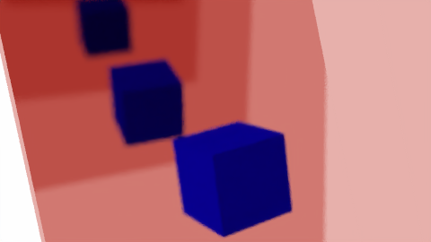
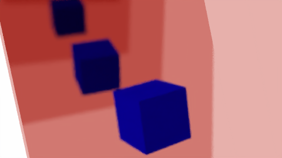